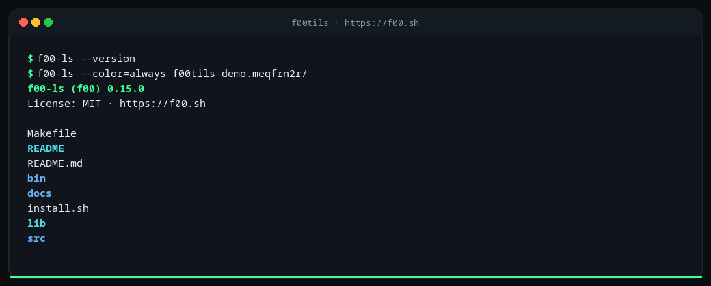
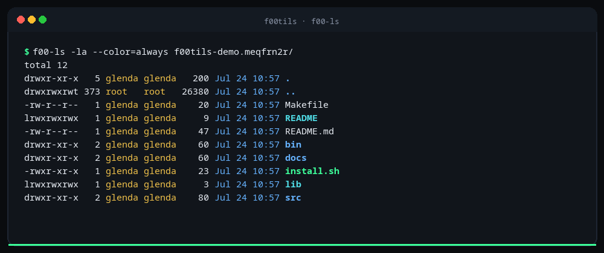
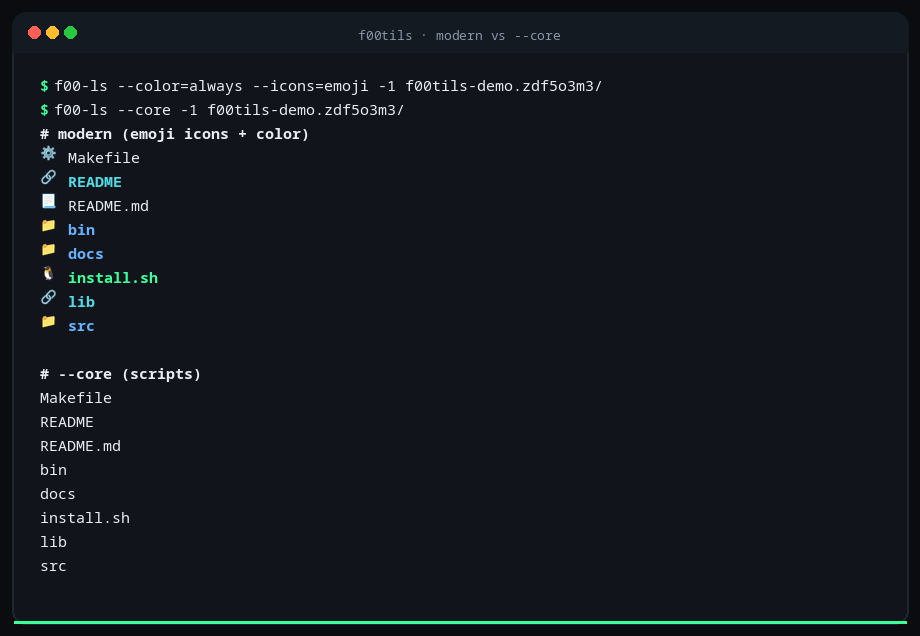
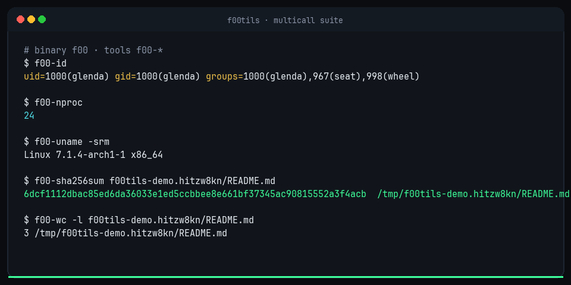

f00tils · pure assembly · multicall · MIT · v0.15.1
coreutils → f00tils
f00tils is the complete coreutils replacement suite in
pure freestanding x86-64 assembly — one multicall binary
named f00, no libc. Default mode is modern (color, richer layout,
--json / --csv).
--core is script-safe coreutils presentation.
The core path is built to beat coreutils on speed.
curl -fsSL https://f00.sh/install.sh | bash
Pin: F00_VERSION=v0.15.1 · scoreboard 106/106

Product laws
- Clone first. Every GNU tool has
f00-*. Under--core, match coreutils for scripts. - Modern on top. Color, layout,
--json/--csv— never a subset of GNU. - Faster always. Freestanding ASM must win the core path. Slow and correct is not done.
- One binary. Multicall by
argv0.
Scoreboard
Features and speed in one place. Suite status is
106/106 shipped ·
--core full · modern · faster than GNU on measured tools.
Ecosystem
| Capability | GNU | f00tils | uutils | busybox / toybox |
|---|---|---|---|---|
| Tool names | Yes | 106/106 | Growing | Subset |
| Script drop-in | Yes | --core |
Varies | Reduced |
| Modern default UX | No | Yes | Partial | Minimal |
| Suite JSON/CSV | No | f00/v1 | Limited | No |
| Freestanding ASM | No | Yes | No | C |
| Multicall binary | No* | Yes | Optional | Yes |
*coreutils ships many separate binaries.
Speed snapshot
Loading measured times…
| Tool | Command | GNU ms | f00 ms | × GNU |
|---|---|---|---|---|
| … | ||||
Top measured wins (spawn-inclusive, warm cache). Full machine data: suite.json · suite.md
Every tool — feature + speed
One row per coreutil: ship status, --core depth, modern surface, and
measured time when available (no nested scroll — use the page).
| # | tool | f00 | shipped | --core |
modern | GNU ms | f00 ms | × GNU |
|---|---|---|---|---|---|---|---|---|
| Loading scoreboard… | ||||||||
Extras also shipped: hostname, kill, rev.
Flag depth:
GNU-COMPLIANCE.md
In color
Real f00-* output with ANSI colors.

f00-ls -la
--core
Install
One-liner
curl -fsSL https://f00.sh/install.sh | bash
| Env | Effect |
|---|---|
INSTALL_DIR | Bin dir (default ~/.local/bin) |
F00_VERSION | Release tag (default: latest) |
F00_LOCAL | Local asm/ with ./f00 |
F00_TOOLS | all or comma list |
F00_SUPERSEDE=1 | Also short names (ls, cat, …) |
F00_ALIAS=1 | Shell aliases |
F00_MAN=1 | Install man pages (default on) |
# pin version
curl -fsSL https://f00.sh/install.sh | F00_VERSION=v0.15.1 bash
# local build
curl -fsSL https://f00.sh/install.sh | F00_LOCAL=$PWD/asm bash
# short names beside f00-*
curl -fsSL https://f00.sh/install.sh | F00_SUPERSEDE=1 bashFrom source
git clone https://github.com/theesfeld/f00.git
cd f00/asm
make && make smoke && make install
# needs: nasm, ld · Linux x86-64Packages
Release assets: tarball, deb, rpm, and Arch package for Linux x86-64.
| Channel | Status | Notes |
|---|---|---|
| Install script | Primary | curl -fsSL https://f00.sh/install.sh | bash |
| GitHub Releases | Shipped | .tar.gz, .deb, .rpm, .pkg.tar.zst |
| Homebrew | Formula | brew install theesfeld/tap/f00 |
| AUR | PKGBUILD | yay -S f00 |
| Debian / Ubuntu | .deb | sudo dpkg -i f00_*_amd64.deb |
| Fedora / RHEL | .rpm | sudo rpm -Uvh f00-*.x86_64.rpm |
| Arch (local) | .pkg.tar.zst | sudo pacman -U f00-*-x86_64.pkg.tar.zst |
| Nix | Experimental | flake.nix · x86_64-linux |
curl -fsSLO https://github.com/theesfeld/f00/releases/download/v0.15.1/f00_0.15.1_amd64.deb
sudo dpkg -i f00_0.15.1_amd64.deb
curl -fsSLO https://github.com/theesfeld/f00/releases/download/v0.15.1/f00-0.15.1-1.x86_64.rpm
sudo rpm -Uvh f00-0.15.1-1.x86_64.rpm
curl -fsSLO https://github.com/theesfeld/f00/releases/download/v0.15.1/f00-0.15.1-1-x86_64.pkg.tar.zst
sudo pacman -U f00-0.15.1-1-x86_64.pkg.tar.zstDocs
- GitHub README
- GNU compliance
- Terminal UX
- Changelog
- Man:
man f00·man f00-ls· …